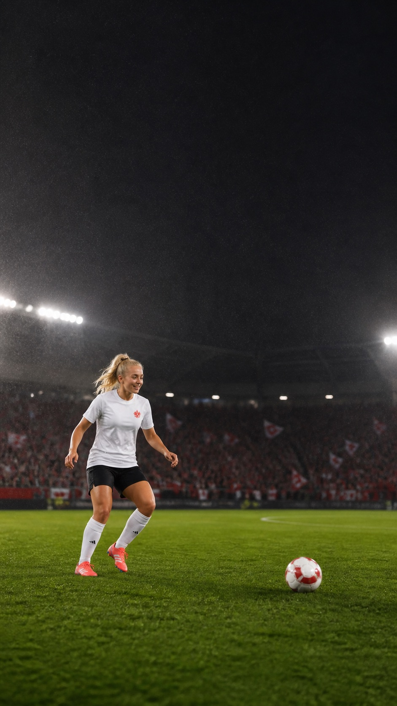

Sichtbar werden
Wo läuft's?
Frauenfußball wird seltener übertragen als Männerfußball. Hier steht, wann welches Spiel läuft – und wo ihr in Frankfurt gemeinsam zuschauen könnt.

Public Viewing
Orte in Frankfurt.
Spielplan
Wann läuft was.
Spiele werden geladen …